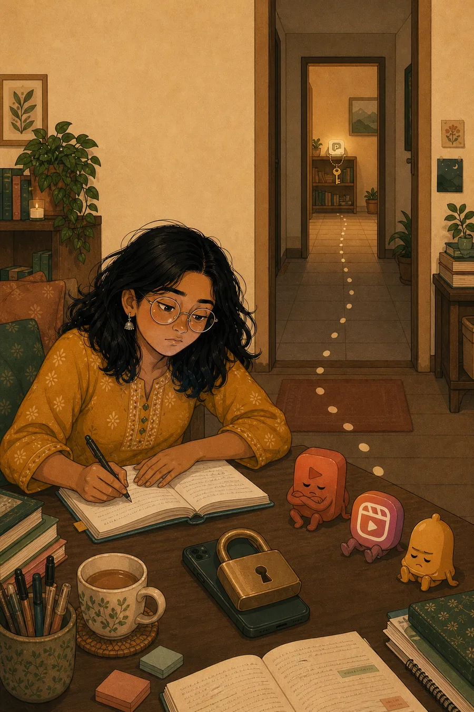

✕ Other app blockers
The key is on your phone.
The lock and the key live on the same phone. When the urge hits, one tap and you're back on reels.
E · Mock F · Lock and key
That's why app blockers fail.
The lock and the key live on the same phone. When the urge hits, one tap and you're back on reels.

Your apps unlock only when you tap Pauzie. Keep it in another room, and you'll have to get up to cheat. Most of the time, you won't.
Same phone. The key just lives somewhere else.